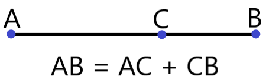
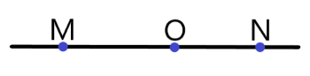

Через любые две точки можно провести прямую, но только одну.
Две прямые, которые имеют общую точку, называются пересекающимися.
Отрезок — часть прямой, ограниченная двумя точками.
Расстояние между точками A и B называют длинной отрезка AB.
Если точка C является внутренней точкой отрезка AB, то отрезок AB равен сумме отрезков AC и CB.

Рис. 1 к Теореме 1
Луч — это часть прямой, ограниченная одной точкой. Примечание: луч OM можно обозначить как [OM). Квадратная скобка стоит перед точкой начала луча, кргулая — после точки, задающей его направление.
Два луча, имеющие общее начало и лежащие на одной прямой, называются дополнительными.

Рис. 2 к Определению 5. Лучи [OM) и [ON) — дополнительные.